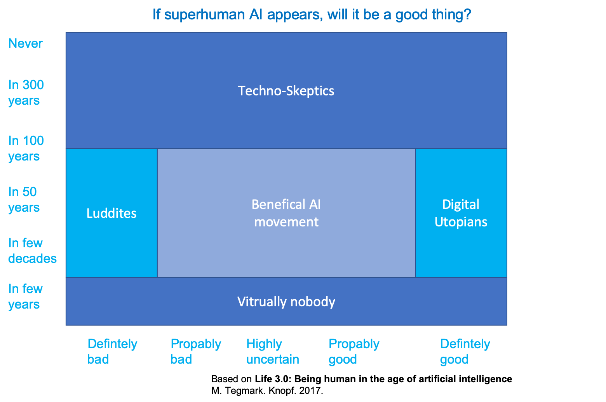

13.1 Development of life
Tegmark in “Life 3.0: Being human in the age of artificial intelligence” (Tegmark 2017) p. 23. classifies life into three stages and shows the two existing stages of life and the third stage which might be ahead.

The three stages of life have overlapping skills, but only life 3.0 has all skills and is able to design its hardware and therefore might be able to have unlimited skills

13.1.1 When will superhuman AI come, and will it be good?
Several opinions about when and if superhuman AI will appear and if it will be a good thing or not exists. Those opinions can be grouped as shown in the following graph.

Luddite => A person opposed to new technology or ways of working
Please cast your vote at https://pingo.coactum.de/15767831
13.1.2 AI aftermath scenario
To be prepared we might want to ask yourselves:
- Do you want there to be superintelligence?
- Do you want humans to still exist, be replaced, cyborgized and/or uploaded/simulated?
- Do you want humans or machines in control?
- Do you want AIs to be conscious or not?
- Do you want to maximize positive experiences, minimize suffering or leave this to sort itself out?
- Do you want life spreading into the cosmos?
- Do you want a civilization striving toward a greater purpose that you sympathize with, or are you OK with future life forms that appear content?
Depending on your answers this might lead to one of the following scenario
A verbal description of the scenarios is given below, type the name of the scenario into the left field, if you want more scenarios to be shown increase the “Show entries” entry
References
Tegmark, Max. 2017. Life 3.0: Being Human in the Age of Artificial Intelligence. Knopf.
Pingo question: Ihre Position zur AGI? https://pingo.coactum.de/questions↩